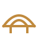
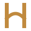
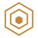
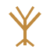
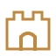

01 — Bifrost
Two arches and a deck. The bridge is the boundary; the pier lines give it structure instead of looking like a signal icon. Reads clearly down to 24 px.
Two marks, one system. The project mark has to survive a 16 px avatar and a NuGet icon. The organization mark is built for RungerHeimdall as an organization: larger, quieter, and not tied to a single product. Both use straight segments, mitred joins and negative space, with no rounded corners.

01 — Bifrost
Two arches and a deck. The bridge is the boundary; the pier lines give it structure instead of looking like a signal icon. Reads clearly down to 24 px.

02 — H Monogram
The letter H with the arch folded into its crossbar. Strongest silhouette of the three, works as an app icon, a favicon and a stamp.

03 — Watchtower
A hexagonal keep with the bridge inside it and a single point at the centre. The most literal "guard" reading, and the best fit for a badge or a VS extension tile.

01 — Concentric
Three nested realms with the innermost one filled. Reads as a territory, a seal or a runic stone. Scales to a 40 px GitHub avatar without turning into noise.

02 — Canopy
A tree reduced to seven segments: trunk, roots, branches. It reads as an ecosystem rather than a single tool, which fits an organization that will host more than one project.

03 — Gate
The wall with a single arch cut into it. The most architectural option, and the one that pairs best with the project's bridge when both marks appear together.